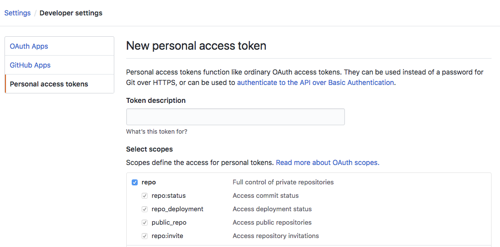

Configure Git credentials & connect a remote repo to Databricks
This article describes how to configure your Git credentials in Databricks so that you can connect a remote repo to Databricks Repos.
Supported Git providers
Databricks supports the following Git providers:
Databricks Repos also supports Bitbucket Server, GitHub Enterprise Server, and GitLab self-managed. For information about integrating with a private Git server instance that is not internet-accessible, see Git Server Proxy for Databricks Repos.
GitHub or GitHub AE
Why use the Databricks GitHub App?
Databricks Repos allows you to choose the Databricks GitHub App for user authentication instead of PATs if you are using a hosted GitHub account. Using the GitHub App provides the following benefits over PATs:
It uses OAuth 2.0 for user authentication. OAuth 2.0 repo traffic is encrypted for strong security.
It is easier to integrate (see the steps below) and does not require individual tracking of tokens.
Token renewal is handled automatically.
The integration can be scoped to specific attached Git repos, allowing you more granular control over access.
Important
Access tokens only have a lifetime of 8 hours before they expire. This minimizes risk if the account’s credentials are exposed.
Link GitHub account using Databricks GitHub App
Note
This feature is not supported with GitHub Enterprise Server. Use a personal access token instead.
In Databricks, link your GitHub account on the User Settings page:
In the upper-right corner of any page, click your username, then select User Settings.
Click the Linked accounts tab.
Change your provider to GitHub, select Link Git account, and click Link.
The Databricks GitHub app authorization page appears. Authorize the app to complete the setup. Authorizing the app allows Databricks to act on your behalf when you perform Git operations in Repos (such as cloning a repository). See the GitHub documentation for more details on app authorization.
To allow access to GitHub repositories, follow the steps below to install and configure the Databricks GitHub app.
Install and configure the Databricks GitHub app to allow access to repositories
You must install and configure the Databricks GitHub app on GitHub repositories that you want to access from Databricks Repos. See the GitHub documentation for more details on app installation.
Open the Databricks GitHub app installation page.
Select the account that owns the repositories you want to access.

If you are not an owner of the account, you must have the account owner install and configure the app for you.
If you are the account owner, install the app. Installing the app gives read and write access to code. Code is only accessed on behalf of users (for example, when a user clones a repository in Databricks Repos).
Optionally, you can give access to only a subset of repositories by selecting the Only select repositories option.
Connect to a GitHub repo using a personal access token
In GitHub, follow these steps to create a personal access token that allows access to your repositories:
In the upper-right corner of any page, click your profile photo, then click Settings.
Click Developer settings.
Click the Personal access tokens tab.
Click the Generate new token button.
Enter a token description.
Select the repo scope and workflow scope, and click the Generate token button. workflow scope is needed in case your repository has GitHub Action workflows.
Copy the token to your clipboard. You enter this token in Databricks under User Settings > Linked accounts.
To use single sign-on, see Authorizing a personal access token for use with SAML single sign-on.
GitLab
In GitLab, follow these steps to create a personal access token that allows access to your repositories:
From GitLab, click your user icon in the upper right corner of the screen and select Preferences.
Click Access Tokens in the sidebar.
Enter a name for the token.
Check the
read_repositoryandwrite_repositorypermissions, and click Create personal access token.Copy the token to your clipboard. Enter this token in Databricks under User Settings > Linked accounts.
See the GitLab documentation to learn more about how to create and manage personal access tokens.
AWS CodeCommit
In AWS CodeCommit, follow these steps to create a HTTPS Git credential that allows access to your repositories:
In AWS CodeCommit, create HTTPS Git credentials that allow access to your repositories. See the AWS CodeCommit documentation. The associated IAM user must have “read” and “write” permissions for the repository.
Record the password. You enter this password in Databricks under User Settings > Linked accounts.
Azure DevOps Services
Connect to an Azure DevOps repo using a token
The following steps show you how to connect a Databricks repo to an Azure DevOps repo when they aren’t in the same Microsoft Entra ID tenancy.
Get an access token for the repository in Azure DevOps:
Go to dev.azure.com, and then sign in to the DevOps organization containing the repository you want to connect Databricks to.
In the upper-right side, click the User Settings icon and select Personal Access Tokens.
Click + New Token.
Enter information into the form:
Name the token.
Select the organization name, which is the repo name.
Set an expiration date.
Choose the the scope required, such as Full access.
Copy the access token displayed.
Enter this token in Databricks under User Settings > Linked accounts.
In Git provider username or email, enter the email address you use to log in to the DevOps organization.
In Azure DevOps, follow these steps to get an access token for the repository. Azure DevOps documentation contains more information about Azure DevOps personal access tokens.
Go to dev.azure.com, and then sign in to the DevOps organization containing the repository you want to connect Databricks to.
In the upper-right side, click the User Settings icon and select Personal Access Tokens.
Click + New Token.
Enter information into the form:
Name the token.
Select the organization name, which is the repo name.
Set an expiration date.
Choose the the scope required, such as Full access.
Copy the access token displayed.
Enter this token in Databricks under User Settings > Linked accounts.
In Git provider username or email, enter the email address you use to log in to the DevOps organization.
Bitbucket
In Bitbucket, follow these steps to create an app password that allows access to your repositories:
Go to Bitbucket Cloud and create an app password that allows access to your repositories. See the Bitbucket Cloud documentation.
Record the password.
In Databricks, enter this password under User Settings > Linked accounts.